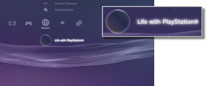

Netzwerk > Life with PlayStation®
Life with PlayStation®
Life with PlayStation® stellt dynamischen webbasierten Inhalt bereit, der in einzelne Kanäle gegliedert ist, die nach Zeit und Standort durchsucht werden können. Durch Auswahl eines Kanals können Sie verschiedene Typen von Inhalten wiedergeben lassen.
Wenn Sie Life with PlayStation® verwenden, sind Sie automatisch Teil des Folding@home™-Projekts. Dabei handelt es sich um ein Projekt zum verteilten Rechnen von der Stanford-Universität.
Starten von Life with PlayStation®
Wenn Sie Life with PlayStation® verwenden möchten, müssen Sie zunächst die Life with PlayStation®-Anwendung herunterladen. Wählen Sie zum Herunterladen der Anwendung  (Life with PlayStation®) unter
(Life with PlayStation®) unter  (Netzwerk). Gehen Sie zum Abschließen der Installation nach den Anweisungen auf dem Bildschirm vor.
(Netzwerk). Gehen Sie zum Abschließen der Installation nach den Anweisungen auf dem Bildschirm vor.

Anmerkungen
- Zum Installieren von Life with PlayStation® sind mindestens 500 MB freier Speicherplatz auf der Festplatte des PS3™-Systems erforderlich.
- Wenn das Icon
 (Folding@home™) angezeigt wird, müssen Sie zunächst die Folding@home™-Anwendung aktualisieren und dann zu Life with PlayStation® aufrüsten. Wählen Sie (Folding@home™) unter (Netzwerk) und gehen Sie zum Aktualisieren der Folding@home™-Anwendung nach den Anweisungen auf dem Bildschirm vor. Wählen Sie dann (Folding@home™) unter (Netzwerk) erneut und gehen Sie zum Aufrüsten zu Life with PlayStation® nach den Anweisungen auf dem Bildschirm vor.
(Folding@home™) angezeigt wird, müssen Sie zunächst die Folding@home™-Anwendung aktualisieren und dann zu Life with PlayStation® aufrüsten. Wählen Sie (Folding@home™) unter (Netzwerk) und gehen Sie zum Aktualisieren der Folding@home™-Anwendung nach den Anweisungen auf dem Bildschirm vor. Wählen Sie dann (Folding@home™) unter (Netzwerk) erneut und gehen Sie zum Aufrüsten zu Life with PlayStation® nach den Anweisungen auf dem Bildschirm vor.
Beenden von Life with PlayStation®
Zum Beenden von Life with PlayStation® drücken Sie die PS-Taste am Wireless-Controller und wählen dann  (Beenden) unter (Netzwerk).
(Beenden) unter (Netzwerk).
Autom. Start einstellen
Life with PlayStation® wird automatisch gestartet, wenn das PS3™-System eine bestimmte Zeitlang nicht bedient wird. Wählen Sie (Life with PlayStation®) unter (Netzwerk), drücken Sie die  -Taste und wählen Sie [Autom. Start] aus dem Menü „Optionen“.
-Taste und wählen Sie [Autom. Start] aus dem Menü „Optionen“.
| Aus | Life with PlayStation® wird nicht automatisch gestartet. |
|---|---|
| Nach 10 Minuten | Life with PlayStation® wird nach 10 Minuten gestartet. |
| Nach 20 Minuten | Life with PlayStation® wird nach 20 Minuten gestartet. |
| Nach 30 Minuten | Life with PlayStation® wird nach 30 Minuten gestartet. |
Anmerkung
[Autom. Start] ist deaktiviert, wenn das PS3™-System nicht mit dem Internet verbunden ist.
Löschen von Life with PlayStation®
Sie können das Programm Life with PlayStation® von der Festplatte löschen. Wählen Sie (Life with PlayStation®) unter (Netzwerk), drücken Sie die -Taste und wählen Sie [Löschen] aus dem Menü „Optionen“.
Anmerkung
Nach dem Löschen des Programms wird das Icon für (Life with PlayStation®) nach wie vor im XMB™-Menü angezeigt.
Wenn Sie das Icon auswählen, wird das Programm Life with PlayStation® erneut heruntergeladen.